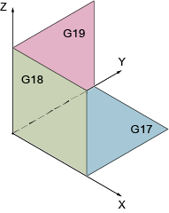

A plane is defined by means of two coordinate axes. The third coordinate axis (tool axis) is perpendicular to this plane and determines the infeed direction of the tool (e.g. for 2½-D machining).
When programming, it is necessary to specify the working plane so that the control system can calculate the tool offset values correctly. The plane is also relevant to certain types of circular programming and polar coordinates.
Working planes are defined as follows:
Plane | Tool axis | |
X/Y | G17 | Z |
Z/X | G18 | Y |
Y/Z | G19 | X |